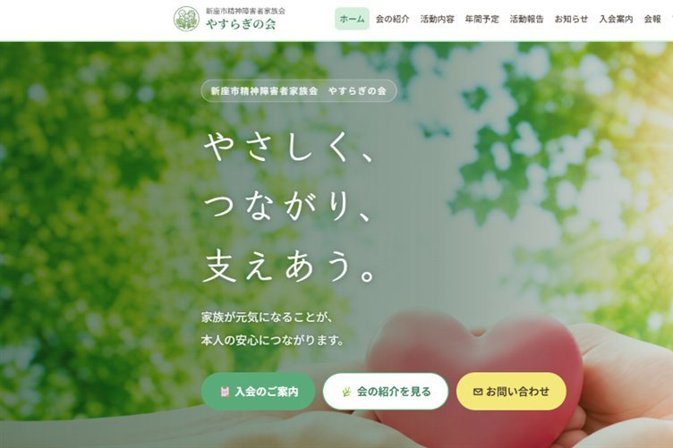
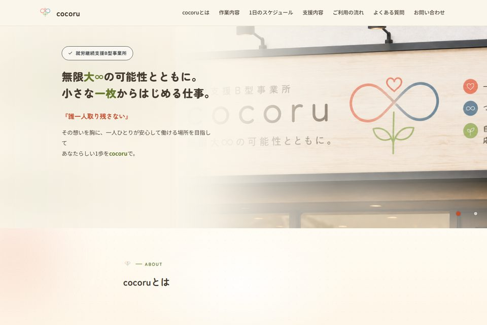
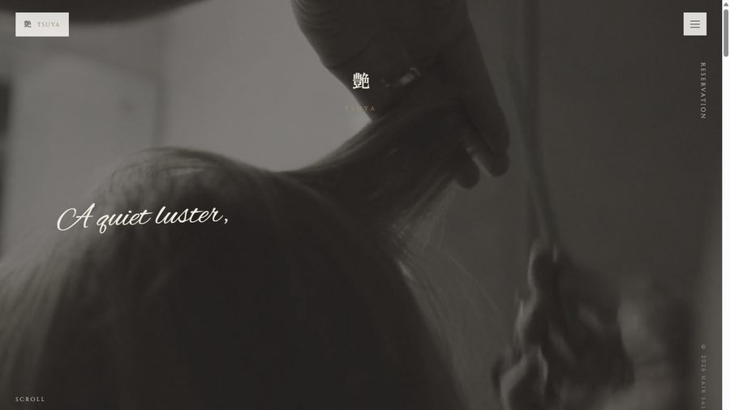
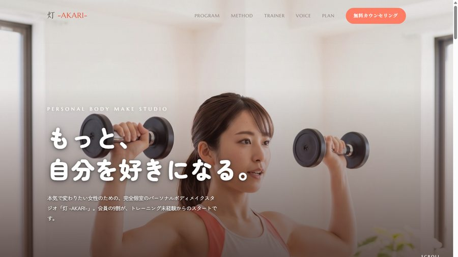
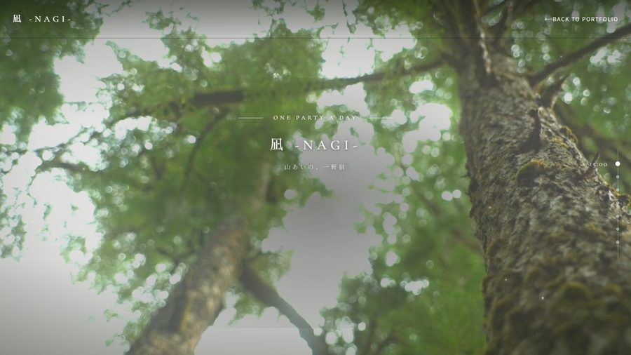

制作実績
制作実績・モデルページ
実際に制作したホームページと、他業種にも対応できることをお伝えするモデルページをご紹介します。
実績
制作実績
実際にご依頼いただき、公開・運用しているホームページです。

代表的な制作実績
家族会・地域福祉団体新座市精神障害者家族会「やすらぎの会」ホームページ
初めての方にも会の雰囲気や活動内容、参加方法が伝わるよう、会の紹介・年間予定・活動報告・入会案内・お問い合わせを整理した情報発信サイトです。

代表的な制作実績
新規開業・福祉事業所就労継続支援B型事業所「cocoru」ホームページ
滋賀県豊郷町で新規開業する就労継続支援B型事業所様のホームページです。古着のリユース作業を通じた就労支援の内容を、開業前から安心して伝えられるよう制作しました。
モデルページ
福祉以外の業種にも対応しています
デザインの幅広さや対応力の一例として、他業種のモデルページもご紹介します。
いずれもご依頼実績ではなく、制作イメージをお伝えするためのオリジナル制作デモです。

制作モデル・美容室
艶-TSUYA-（プライベートヘアサロン）
一人ひとりの時間を大切にする、完全個室のプライベートサロン。落ち着いた黒基調のデザインで、上質な余韻を演出したホームページです。

制作モデル・パーソナルジム
灯-AKARI-（パーソナルボディメイクスタジオ）
「もっと、自分を好きになる。」がコンセプトの女性向けパーソナルジム。トレーニング未経験の方にも寄り添う、明るく前向きなデザインです。

準備中
制作モデル・準備中
IT・テック系（準備中）
ハイテク・先進的な雰囲気のIT企業向けデザインを制作中です。公開までしばらくお待ちください。
公開まで少々お待ちください